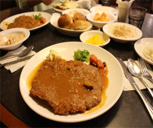
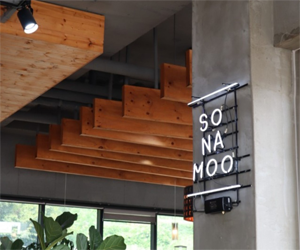
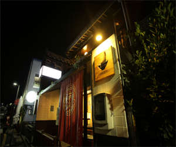

- 
- 상호명 : 잉글랜드왕돈까스
주소 : 인천 중구 우현로90번길 7 혜성빌딩 2층
전화번호 : 032-772-7266
평점 : 4.28/5
TV방영 : 맛있는녀석들 271회, 20.05.01.돈가스편 - 
- 상호명 : 소나무식당
주소 : 인천 중구 용유로21번길 57 소나무
전화번호 : 0507-1424-0771
평점 : 4.36/5
TV방영 : 생방송오늘저녁 1384회, 20.08.20. 생선구이정식/해물칼국수전골 /
- 
- 상호명 : 온센
주소 : 인천 중구 신포로35번길 22
전화번호 : 070-8861-8011
평점 : 4.45/5
TV방영 : 백종원의 골목식당